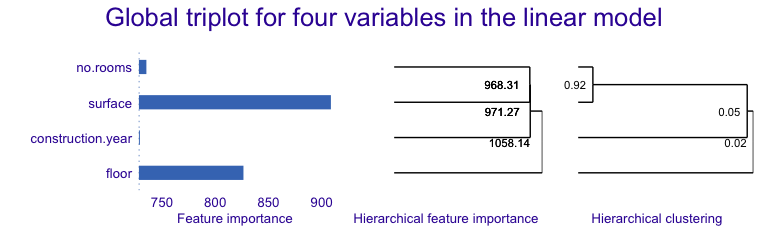
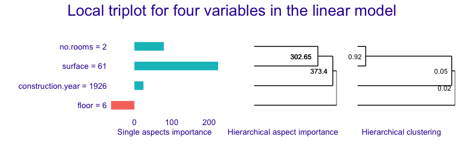
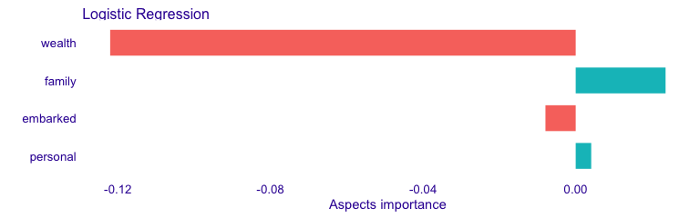

Introduction
The triplot package provides tools for exploration of machine learning predictive models. It contains an instance-level explainer called predict_aspects (AKA aspects_importance), that is able to explain the contribution of the whole groups of explanatory variables. Furthermore, package delivers functionality called triplot - it illustrates how the importance of aspects (group of predictors) change depending on the size of aspects.
Key functions:
-
predict_triplot()andmodel_triplot()for instance- and data-level summary of automatic aspect importance grouping, -
predict_aspects()for calculating the feature groups importance (called aspects importance) for a selected observation, -
group_variables()for grouping of correlated numeric features into aspects.
The triplot package is a part of DrWhy.AI universe. More information about analysis of machine learning models can be found in the Explanatory Model Analysis. Explore, Explain and Examine Predictive Models e-book.

Overview
triplot shows, in one place:
- the importance of every single feature,
- hierarchical aspects importance,
- order of grouping features into aspects.
We can use it to investigate the instance level importance of features (using predict_aspects() function) or to illustrate the model level importance of features (using model_parts() function from DALEX package). triplot can be only used on numerical features. More information about this functionality can be found in triplot overview.
Basic triplot for a model
To showcase triplot, we will choose apartments dataset from DALEX, use it’s numeric features to build a model, create DALEX explainer, use model_triplot() to calculate the triplot object and then plot it with the generic plot() function.
Create an explainer
explain_apartments <- DALEX::explain(model = model_apartments, data = apartments_num[, -1], y = apartments_num$m2.price, verbose = FALSE)
Create a triplot object
set.seed(123) library("triplot") tri_apartments <- model_triplot(explain_apartments) plot(tri_apartments) + patchwork::plot_annotation(title = "Global triplot for four variables in the linear model")

The left panel shows the global importance of individual variables. Right panel shows global correlation structure visualized by hierarchical clustering. The middle panel shows the importance of groups of variables determined by the hierarchical clustering.
At the model level, surface and floor have the biggest contributions. But we also know that Number of rooms and surface are strongly correlated and together have strong influence on the model prediction.Construction year has small influence on the prediction, is not correlated with number of rooms nor surface variables. Adding construction year to them, only slightly increases the importance of this group.
Basic triplot for an observation
Afterwards, we are building triplot for single instance and it’s prediction.
(new_apartment <- apartments_num[6, -1])
tri_apartments <- predict_triplot(explain_apartments, new_observation = new_apartment) plot(tri_apartments) + patchwork::plot_annotation(title = "Local triplot for four variables in the linear model")

The left panel shows the local importance of individual variables (similar to LIME). Right panel shows global correlation structure visualized by hierarchical clustering. The middle panel shows the local importance of groups of variables (similar to LIME) determined by the hierarchical clustering.
We can observe that for the given apartment surface has also significant, positive influence on the prediction. Adding number of rooms, increases its contribution. However, adding construction year to those two features, decreases the group importance.
We can notice that floor has the small influence on the prediction of this observation, unlike in the model-level analysis.
Aspect importance for single instance
For this example we use titanic dataset with a logistic regression model that predicts passenger survival. Features are combined into thematic aspects.
Select an instance
We are interested in explaining the model prediction for the johny_d example.
(johny_d <- titanic_imputed[2,])
predict(model_titanic_glm, johny_d, type = "response")
It turns out that the model prediction for this passenger’s survival is very low. Let’s see which aspects have the biggest influence on it.
We start with DALEX explainer.
explain_titanic <- DALEX::explain(model_titanic_glm, data = titanic_imputed, y = titanic_imputed$survived, label = "Logistic Regression", verbose = FALSE)
And use it to call triplot::predict_aspects() function. Afterwards, we print and plot function results
library("triplot") ai_titanic <- predict_aspects(x = explain_titanic, new_observation = johny_d[,-8], variable_groups = aspects_titanic) print(ai_titanic, show_features = TRUE)
## variable_groups importance features
## 2 wealth -0.122049 class, fare
## 3 family 0.023564 sibsp, parch
## 5 embarked -0.007929 embarked
## 4 personal 0.004069 age, genderplot(ai_titanic)

We can observe that wealth (class, fare) variables have the biggest contribution to the prediction. This contribution is of a negative type. Personal (age, gender) and Family (sibsp, parch) variables have positive influence on the prediction, but it is much smaller. Embarked feature has very small, negative contribution to the prediction.